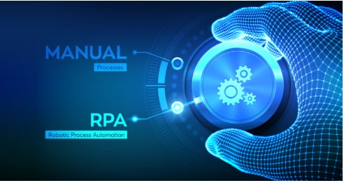
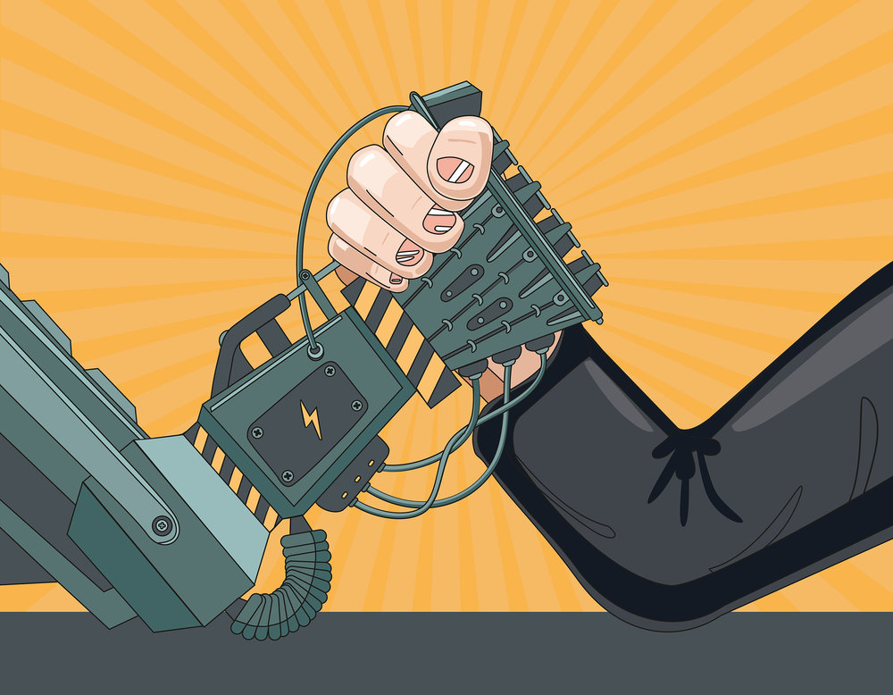
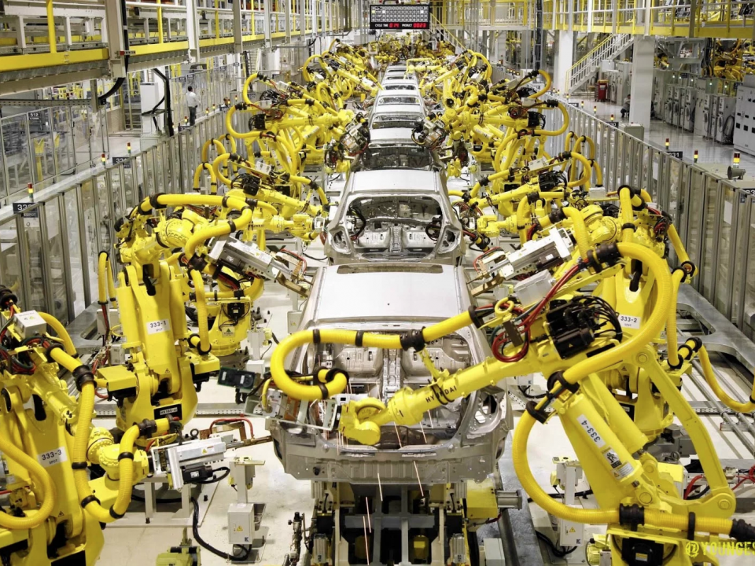

Hyperautomation (Jerin)
Hyperautomation is an expansion of automation in the workplace and the implementation of Robotic Process Automation (RPA). This area is concerned with automating a wide range of processes to “”augment” workers so they may perform their tasks more efficiently and to a higher standard or in other cases to outright replace workers.
Right now, hyperautomation utilises advances in other tech fields such as artificial Intelligence and machine learning to develop tools that, unlike normal automation, can automate complex processes that would otherwise require an expert or specialist. For example, one company, ‘HemaSource’, has used hyperautomation to efficiently automate the “procure-to-pay” process which is usually otherwise performed by an accountant. Furthermore these hyperautomated tools are already capable of self-learning and improving as they keep performing a given task
In the future, more sophisticated processes will also be mastered by hyperautomation. For example rental car companies are exploring how “automated expert systems and assistance” can be used to rent cars for customers without any human intervention. The advances in Hyperautomation are made possible due to availability of data (particularly in the jobs sector) that has continued to become more abundant in recent years. More data is essential for machines to undergo ‘machine learning’ which inturn allows for these machines to automate more processes, more effectively as the availability of data increases. One example of the state of art of this new technology would be the automation of writing news articles and reports by many major news agencies. Currently, news providers such as Forbes, Bloomberg, Associated Press or Los Angeles times all use automated processes to write a significant percentage of articles, for instance “over a third of Bloomberg’s news content is generated by AI”. At this stage hyperautomation can be utilised by news agencies to generate and format articles on a number of subjects from sports to economics, and it's very likely most people have read one of these articles without suspecting it was written by a robot. In the next 3 years it's likely this type of RPA can be improved to the point they are able to generate more sophisticated articles or even be used to produce more academic writings.
Hyperautomation will likely have a profound impact on our society, in particular with productivity. As automation has done in the past, hyperautomation will continue to make more jobs be done quicker and more effortlessly. This is obviously beneficial to Businesses as productivity will improve as machines can perform many tasks more efficiently and with less variability whilst maintaining that product’s (or service’s) quality, to a level that human employees just can't achieve or compete with. Although, employees may also benefit from this development as they will be relieved of doing repetitive, labour-intensive or sometimes even dangerous tasks. For instance the nuclear energy industry has taken to use robots to clean up nuclear sites and perform similarly hazardous work. Because hyperautomation can make these kinds of burdensome jobs obsolete, it could be argued that this technology has the potential to achieve a higher standard of living for humanity. Although hyperautomation may increase productivity, it may also have dire effects on many people, in particular the working class and the middle class. Although some claim hyperautomation merely “augments” workers, it may pose a risk to many jobs in Australia and worldwide. Gartner, the company which coined the term ‘hyperautomation’, defines it as the “expansion of automation” which up to this point has been responsible for pushing many workers out of the unskilled, repetitive or labour intensive job occupations, largely in the manufacturing industry. And in the future, hyperautomation has the potential to continue this trend and wipe out millions of more jobs except this time a wider range of occupations will be affected, e.g. pharmacists, analysts, journalists, radiologists, bank tellers and cashiers, in total the Australian government estimates “44 per cent of Australian jobs are highly susceptible to automation”. This means many people may be pushed into unemployment or be forced to have to shift into more service oriented jobs (for example: social workers, therapists and nutritionists, surgeons, clergy) as they have the lowest chance of being taken due to the trend of hyperautomation
On the other hand, hyperautomation can also lead to the creation of new jobs. In the past forms of automation have been introduced and had significantly changed society, but largely in a positive sense. During the Industrial Revolution, several processes were automated in agriculture with the introduction of tools like the seed drill and the dutch plough which made the lives of farmers much easier. And although these new innovations destroyed agricultural jobs (from 75 percent of the world population working in agriculture pre-industrial revolution automation reduced this to just 5 percent), many new jobs were created in the textile industry for example, which arguably provided better living conditions. As automation has done in the past, hyperautomation may lead to the creation of new jobs that are able to provide better living standards.
Currently as a full-time student, I will probably be minimally affected. If anything, it might be somewhat beneficial as hyperautomation’s efficiency would reduce production costs in many businesses, leading to lower cost of goods which is great for customers. The rest of my family would similarly be affected apart from my father who is a chef, he may benefit from this development as there are many processes that can be automated and there hyperautomation can serve to “augment” his job and make it easier but it may also make the occupation obsolete in the future. Similarly it may negatively affect me in the long term as well. Jobs involving complex work on a computer are particularly vulnerable to becoming obsolete due to hyperautomation, which doesn't bode well for someone pursuing a career in I.T. If this does become the case, I might have to specialise in another area less susceptible to automation.